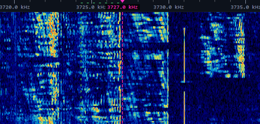

SSB-Audio: verständlich statt nur laut
Mikrofon, Pegel und Gegenprobe: ein praktischer Weg zu sauberer Sprache, mit einem Lesetipp von HB9UQX.

Wasserfall-Aufnahme aus dem Stationsarchiv von HB3XDC.
Zuerst das Ziel festlegen
Ein entspanntes Lokal-QSO und ein schwaches DX-Signal stellen unterschiedliche Anforderungen. Eine warme Stimme kann angenehm wirken; im Rauschen helfen vor allem gut erkennbare Sprachanteile. Mehr Bass und mehr Kompression sind deshalb keine automatische Verbesserung.
Lesetipp: Peter HB9UQX
Peter erläutert auf seiner QRZ-Seite seinen persönlichen Ansatz zur SSB-Klanggestaltung. Er unterscheidet angenehmen Klang von Schwachsignal-Verständlichkeit und arbeitet mit Frequenzanalyse, Equalizer sowie wiederholter Kontrolle des verarbeiteten Signals. Seine konkreten Klangkurven sind persönliche Vorschläge. Sie lassen sich nicht unverändert auf jede Stimme, jedes Mikrofon und jeden Übertragungsweg anwenden.
Ein sauberer Ausgangspunkt
- Mikrofonposition konstant halten: normal sprechen, Abstand und seitlichen Einsprechwinkel festlegen. Ein wechselnder Abstand macht jede EQ-Beurteilung unsicher.
- Signalweg prüfen: Mikrofon- und Line-Pegel unterscheiden. Ein Line-Ausgang kann einen Mikrofoneingang übersteuern, selbst wenn die spätere Lautstärke klein erscheint.
- Neutral beginnen: starke EQ-Korrekturen und Kompressor zunächst zurücknehmen. Zuerst einen unverzerrten Grundpegel einstellen.
- Nach Geräteanleitung aussteuern: ALC-Anzeige bei normaler Sprache beobachten. Ihr sinnvoller Bereich ist geräteabhängig; ein pauschales „ALC immer null“ oder „möglichst viel ALC“ hilft nicht.
- Gegenprobe aufnehmen: eine gleichartige Sprechprobe über einen ausreichend starken, aber nicht übersteuerten Empfangsweg anhören. Zum Beispiel einen entfernten WebSDR verwenden und dessen Filter dokumentieren.
Nur einen Regler verändern
Sprich denselben kurzen Text mit normalen Pausen und verschiedenen Lauten. Ändere einen EQ-Bereich geringfügig, zeichne erneut auf und vergleiche bei ähnlicher Wiedergabelautstärke. Zischeln, harte Konsonanten und hörbares Pumpen sind Hinweise zum Zurücknehmen. Eine Spektralanalyse etwa mit Audacity zeigt Verteilungen, bewertet aber nicht automatisch Verständlichkeit.
Kompression reduziert Pegelschwankungen und kann die mittlere Sprachleistung erhöhen. Zu viel davon hebt Raumgeräusche und Atemgeräusche an und kann das Signal unangenehm machen. Auf Sendebandbreite achten: Breiteres Audio beansprucht mehr Spektrum und ist nicht in jeder Situation sinnvoll.
Die Empfangsseite gehört zum Versuch
Ein schmaler WebSDR-Filter blendet Teile deines Audios aus; AGC, Rauschunterdrückung und Fading verändern den Eindruck weiter. Ein einzelner Mitschnitt ist deshalb keine Labormessung des Senders. Wiederhole den Vergleich mit guten Empfangsbedingungen. Hole nach Möglichkeit einen konkreten Rapport ein: Welche Wörter fehlen? Klingt es verzerrt? Verändert sich die Verständlichkeit bei weniger Kompression?
Merksatz: Erst Pegel und Mikrofonführung, dann Frequenzgang, zuletzt behutsame Dynamikbearbeitung. Ein gespeichertes Ausgangsprofil macht jeden Versuch rückgängig und verhindert endloses Nachregeln.